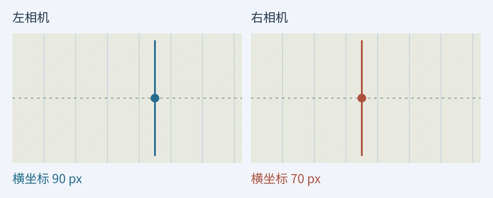
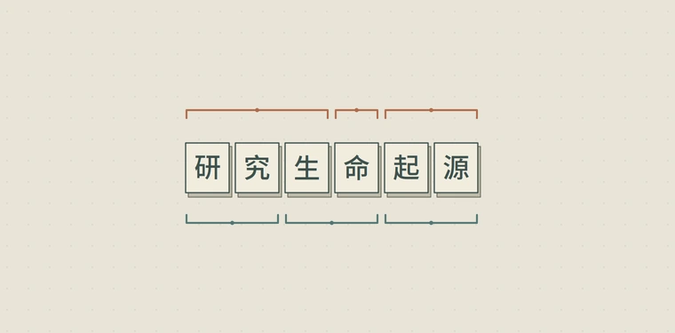
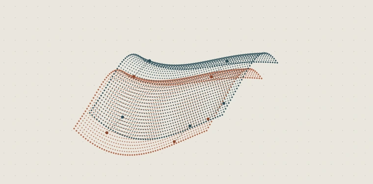

从几个拍摄角度出发，看一组有颜色、能透光的三维高斯怎样绘出新的视角。

左右图像中同一点的横向偏移可以换算成深度。距离越远，一像素误差的代价越大。

用“研究生命起源”比较两种查词方向，再看分词边界怎样影响搜索。

用两组桌角坐标手算一次配准，再看复杂场景中的旋转、初始位姿、点到面残差和几何退化。
从一台移动相机的坐标开始，学习点云对齐，再看机器人怎样在地图上找到位置和路径。
先读懂一个像素，再用两台相机量距离，最后让相机、惯性传感器和激光雷达共享坐标。
从拍摄角度、三角曲面到半透明高斯，理解照片怎样变成可以换视角的场景。
从中文词语的边界起步，沿着词向量、分类和序列模型，读到语言模型如何生成下一句话。
从字节在网络上的传递，到机器人消息的订阅与回放，弄清程序之间究竟交换了什么。
用状态机、后台任务、录制队列和回归测试，解决日常程序中常见的顺序与时机问题。